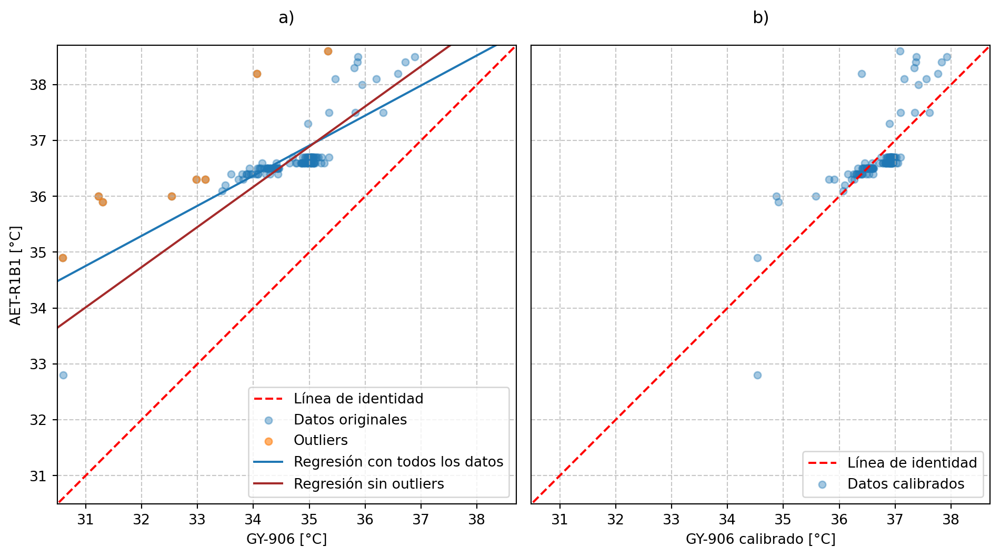
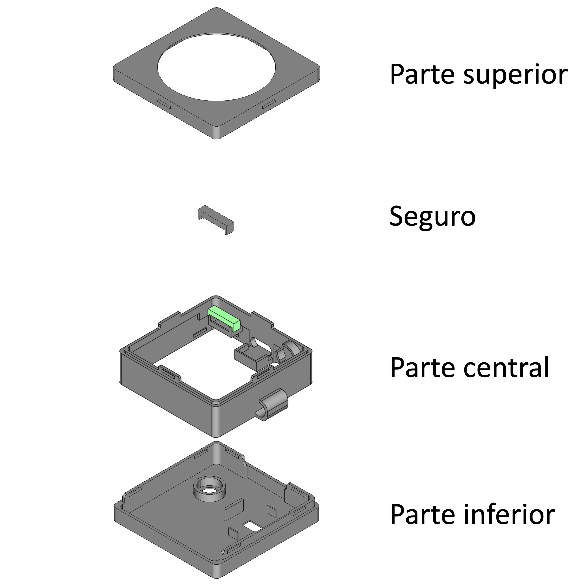
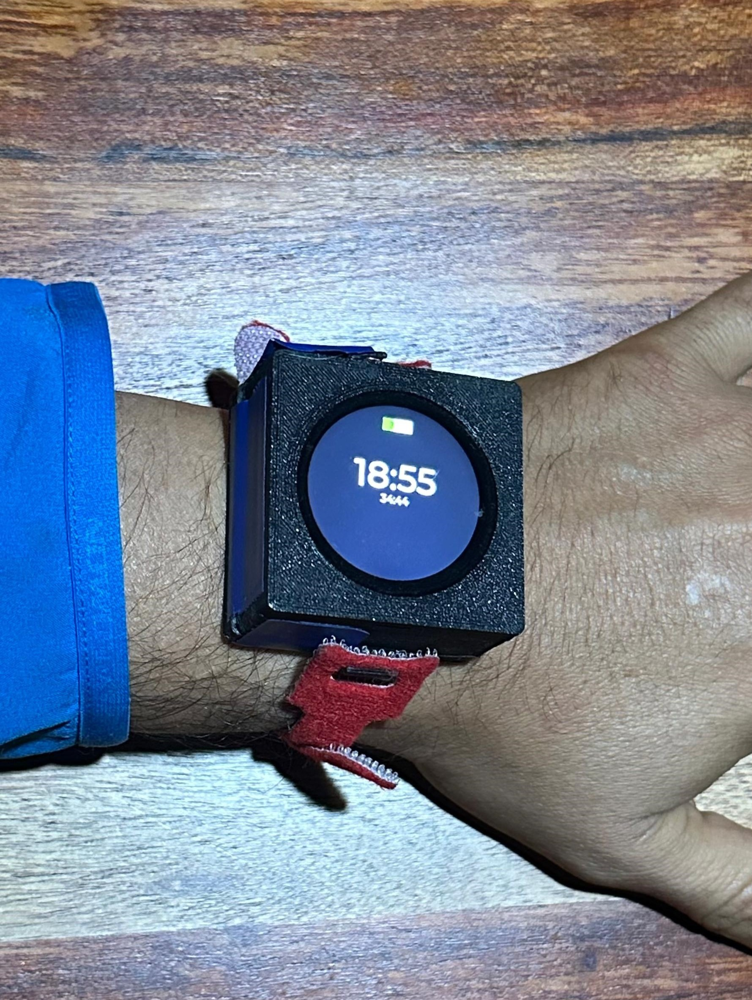
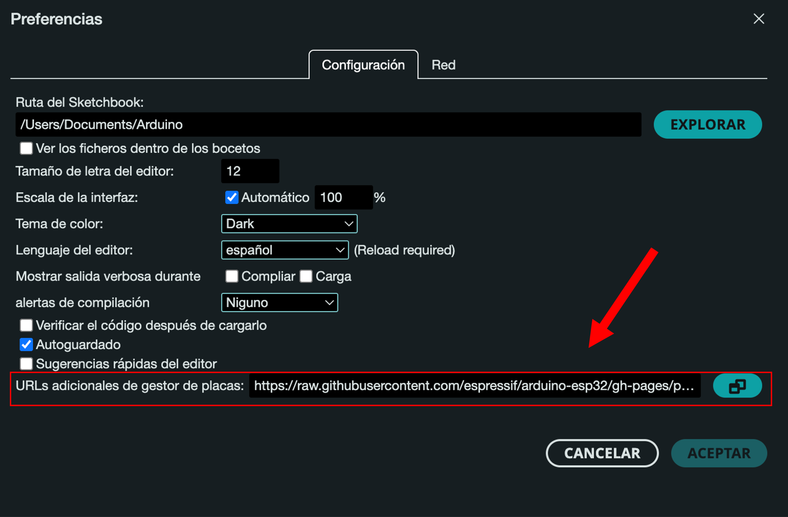
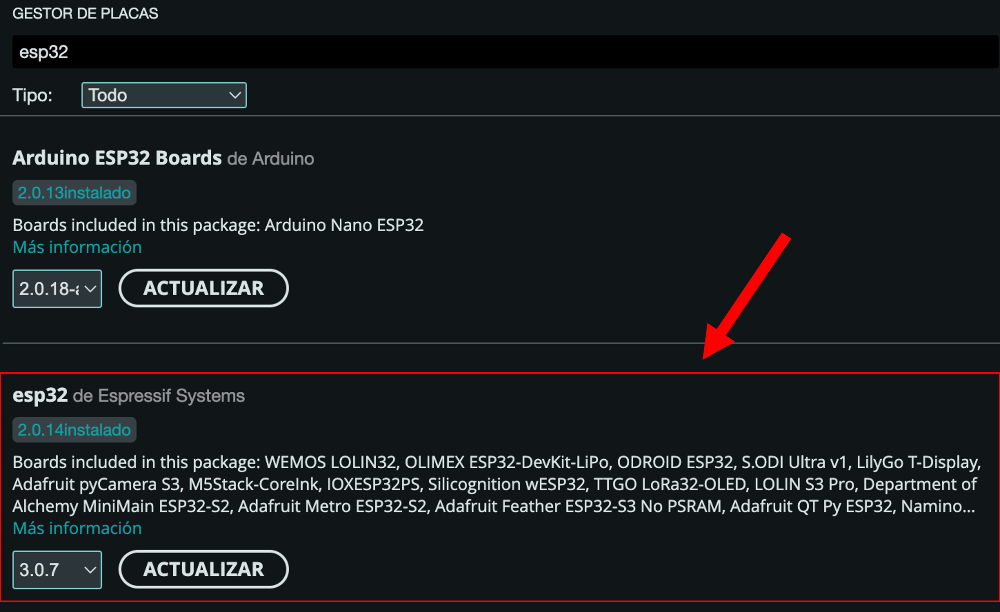

3 Diseño, desarrollo y validación
En este capítulo se describe el proceso completo de desarrollo, construcción y validación del reloj inteligente para la recopilación de datos de confort térmico presentado en esta tesis. La Sección 3.1 presenta una descripción detallada del reloj inteligente, la selección de los componentes y la justificación de su elección. En la Sección 3.2 se desarrolla la etapa de diseño y construcción del dispositivo. La Sección 3.3 se centra en el diseño y la implementación de las encuestas mediante la interfaz gráfica, mientras que la Sección 3.4 detalla el proceso de calibración de los sensores. En la Sección 3.5 se presenta una descripción de la lógica de programación del reloj inteligente, y en la Sección 3.6 se proporcionan instrucciones de uso. Finalmente, en la Sección 3.7 se verifica la funcionalidad del reloj inteligente para recopilar información de las encuestas de confort térmico y las mediciones de la temperatura de la piel y la frecuencia cardíaca para enviar estos datos a la plataforma ThingsBoard.
3.1 Metodología
- Descripción general del dispositivo
El dispositivo presentado en esta tesis es un prototipo de reloj inteligente diseñado específicamente para la investigación en el ámbito del confort térmico. Este dispositivo permite la recopilación de la temperatura de la piel en la parte posterior de la muñeca y la frecuencia cardíaca, variables cuya relación con el confort térmico se presentó en el capítulo anterior. Además, este dispositivo realiza encuestas periódicas simplificadas de confort térmico mediante una interfaz de usuario intuitiva, que permite responder la encuesta de forma rápida y sencilla. La recopilación de estos datos se realiza en la plataforma de Internet de las Cosas (IoT, por sus siglas en inglés) llamada ThingsBoard, lo que permite la creación de una base de datos de confort térmico para diversos bioclimas, incluyendo el bioclima cálido semihúmedo (Infonavit 2024) en Temixco, Morelos, donde se lleva a cabo el desarrollo de este reloj inteligente. Esta base de datos facilitará estudios para el entendimiento del confort térmico y el desarrollo de modelos de confort para este tipo de bioclima, así como de modelos de confort personalizados.
Además, este dispositivo realiza encuestas periódicas simplificadas de confort térmico mediante una interfaz de usuario intuitiva, que permite responder la encuesta de forma rápida y sencilla. La recopilación de estos datos se realiza en la plataforma de Internet de las Cosas (IoT, por sus siglas en inglés) llamada ThingsBoard, lo que permite la creación de una base de datos de confort térmico en diversas zonas bioclimáticas, incluyendo el bioclima cálido semihúmedo de Temixco, Morelos (Infonavit 2024). Esta base de datos facilitará estudios para el entendimiento del confort térmico y el desarrollo de modelos de confort aplicables a distintos bioclimas, así como de modelos de confort personalizados.
- Selección de componentes
Para garantizar el funcionamiento del dispositivo, es fundamental seleccionar correctamente todos los componentes. A continuación se describen los principales componentes utilizados, junto con sus características y la justificación de su elección en el proyecto. Esta justificación se basa en criterios como compatibilidad, consumo energético, exactitud y capacidad de procesamiento en el caso de la placa de desarrollo.
Los componentes básicos del reloj inteligente son:
- Placa de desarrollo
- Pantalla
- Sensor de temperatura
- Sensor de frecuencia cardíaca
- Circuito vibrador
- Batería
Placa de desarrollo
La selección de la placa o tarjeta de desarrollo es una decisión crucial en el desarrollo del proyecto. Se requiere una placa de tamaño reducido que cumpla con características esenciales como conexión WiFi, velocidad de procesamiento, memoria ROM y comunicación I2C. Además, debe tener un bajo consumo energético para garantizar el uso portátil prolongado del reloj inteligente.
Durante el proceso de selección se consideraron placas de desarrollo Arduino, ESP y Raspberry. En la tabla Tabla 3.1 se presenta una comparación de diferentes placas de desarrollo con las características requeridas.
| Placa de desarrollo | WIFI | Bluetooth | Comunicación | Cable | Pines | Dimensiones |
|---|---|---|---|---|---|---|
| Arduino Nano 33 IoT | si | 4.2 | SPI, I2C, I2S, UART | Micro USB | 30 GPIOS, 8 ADC | 45.00 x 18.00 mm |
| Arduino nano esp32 | si | LE | UART, I2C, SPI, I2S, CAN(TWAI) | USB C | 22 GPIOS, 8 ADC | 43.18 x 17.78 mm |
| Arduino nano RP2040 connect | si | 4.2 | STI, I2C, I2S, PIO, UART | USB C | 30 GPIOS, 8 ADC | 43.18 x 17.77 mm |
| Raspberry pi pico W | si | 5.2 | UART, I2C, SPI | Micro USB | 26 GPIOS, 3 ADC | 51.30 x 21.00 mm |
| ESP32 pico kit | si | 4.2 | I2C, I2S, SPI | Micro USB | 34 GPIOS | 52.00 x 20.30 mm |
| Seeed Studio XIAO ESP32C3 | si | 5 | 1x UART, 1x IIC, 1x SPI | USB C | 11 GPIOS, 4 ADC | 21.00 x 17.80 mm |
| Seeed Studio XIAO ESP32S3 | si | 5 | 1x UART, 1x IIC, 1x SPI | USB C | 11 GPIOS, 9 ADC | 21.00 x 17.80 mm |
Si bien todas las placas presentadas son opciones viables, Seeed Studio ha desarrollado placas orientadas a aplicaciones de dispositivos portátiles. Estas placas tienen las características deseadas y además empatan perfectamente con las necesidades del proyecto debido a su tamaño compacto, conectividad, modos de bajo consumo y la posibilidad de la integración con una pantalla táctil desarrollada por la misma marca. Para el desarrollo del proyecto, se elige la XIAO ESP32C3 sobre la XIAO ESP32S3. Aunque la primera es menos potente, cumple con todos los requerimientos a un menor costo. Además, la limitada disponibilidad de la XIAO ESP32S3 en México durante el desarrollo del proyecto también influyó en la decisión. No obstante, la XIAO ESP32S3 podría ser usada sin ningún problema, ofreciendo incluso aumentar considerablemente la capacidad de memoria para futuras modificaciones o mejoras en el código. La Tabla 3.2 muestra las características específicas de la placa seleccionada.
| Parámetro | Seeed Studio XIAO ESP32C3 |
|---|---|
| Procesador | ESP32-C3 32 bit RISC-V 160 MHz |
| Conectividad | 2.4 GHz WiFi BLE: Bluetooth 5.0, malla Bluetooth |
| On-chip Memory | 400 KB SRAM & 4 MB Flash |
| Interfaz | 1x UART, 1x IIC, 1x SPI, 11x GPIO(PWM), 4x ADC, 1x botón Reset, 1x botón Boot |
| Dimensiones | 21.00 x 17.80 mm |
| Características eléctricas | Voltaje de entrada (Typo-C): 5 V Voltaje de operación 3.3 V |
| Voltaje de operación: - Type-C: 5 V@19mA - BAT: 3.8 V@22mA |
|
| corriente de carga de batería: 350 mA/100 mA | |
| Modo de bajo consumo | Modo deep-sleep: > 44 µA |
| Consumo de energía con WIFI activo | Modo activo: < 75 mA |
| Consumo de energía con Bluetooth activo | Modo modem-sleep: < 27 mA |
| Temperatura de trabajo | -40°C a 85°C |
Pantalla
La elección de la pantalla debe alinearse con los criterios establecidos para la placa de desarrollo. Se busca una pantalla que además de ser de tamaño reducido, sea compatible con la placa seleccionada. En la tabla Tabla 3.3, se presentan las características básicas de las pantallas compatibles con la placa de desarrollo seleccionada.
| Pantalla | Pantalla táctil | Tecnología | Diametro |
|---|---|---|---|
| Seeed Studio Round Display for XIAO | si | TFT LCD | 32.51 mm |
| Waveshare Módulo de visualización | no | OLED RGB | 38.10 mm |
| GC9A01 Pantalla | no | TFT LCD | 32.51 mm |
La pantalla seleccionada es la Seeed Studio Round Display for XIAO. Este modelo es compatible con la placa XIAO ESP32C3, elegida previamente, gracias al enfoque de Seeed Studio para desarrollar un ecosistema de dispositivos orientado a aplicaciones portátiles. La compatibilidad entre los componentes, tecnología táctil y diseño de la pantalla, logran que la pantalla se ajuste a las necesidades del proyecto.
Sensor de temperatura
La Tabla 3.4 muestra una comparación entre distintos sensores de temperatura que podrían ser utilizados en el proyecto, incluyendo termistores, sensores infrarrojos y un sensor de temperatura y humedad. Estos sensores tienen un rango de operación entre los 3.3 V y 5.0 V para garantizar su compatibilidad con la placa de desarrollo seleccionada.
| Nombre | Tipo | Rango | Precisión | Comunicación | Dimensión |
|---|---|---|---|---|---|
| GY-906 (MLX90614) | Sensor de temperatura infrarrojo | -70°C a 382.2°C | ±0.5°C (0°C a 50°C) | I2C | 17.00 x 11.00 mm |
| ZTP-115M | Sensor de temperatura infrarrojo | -20°C a 100°C | ±1°C (32°C a 42°C) | Salida analógica | 33.00 x 17.00 mm |
| NTC MF52AT | Termistor NTC | -55°C a 125°C | ±0.2°C (dependiendo de la resistencia) | No aplica (sensor analógico) | 6.00 x 3.00 mm |
| BetaTherm 10K3A1 | Termistor NTC | -50°C a 150°C | ±0.2°C (25°C a 45°C) | No aplica (sensor analógico) | 6.00 x 2.40 mm |
| AHT20 | Sensor de temperatura y humedad | -40°C a 85°C | ±0.3°C (temperatura) / ±2% HR (humedad) | I2C | 16.10 x 15.98 mm |
Tras un análisis detallado, se selecciona el sensor GY-906 debido a su tamaño compacto, su tecnología infrarroja y comunicación digital por I2C. Aunque el termistor NTC MF52AT ofrece una alternativa viable, se descarta por ser un sensor analógico. Dado que el reloj inteligente está diseñado para operar en un espacio reducido, cualquier interferencia en las conexiones internas podría afectar la precisión de los sensores analógicos. Por esta razón, se opta por el GY-906, que garantiza transmisión de datos en entornos compactos.
Sensor de frecuencia cardíaca
Los fotopletismografía utilizada en sensores ópticos se ha consolidado como una técnica confiable para la medición de la frecuencia cardíaca (Allen 2007). Por lo que se ha convertido en una opción para los dispositivos portátiles que desean medir la frecuencia cardíaca. Maxim Integrated ofrece la línea de sensores MAX3010X para este tipo de aplicaciones. Estos sensores destacan por su bajo consumo de energía, precio accesible, tamaño compacto y protocolo de comunicación I2C. La Tabla 3.5 muestra las características de los sensores MAX20100, MAX30102 y MAX30105, incluyendo la resolución del convertidor analógico digital (ADC, por sus siglas en inglés).
| Sensor | Tipo de almacenamiento | Resolución ADC | Funcionalidades | Consumo de Energía |
|---|---|---|---|---|
| MAX30100 | 16-bit FIFO | 14-bit | Frecuencia cardíaca, nivel de oxigenación en la sangre | 600 µA a 1.0 mA |
| MAX30102 | 32-bit FIFO | 18-bit | Frecuencia cardíaca, nivel de oxigenación en la sangre | 600 µA a 1.2 mA |
| MAX30105 | 32-bit FIFO | 18-bit | Frecuencia cardíaca, nivel de oxigenación en la sangre, detección de partículas | 600 µA a 1.2 mA |
El MAX30102 se elige como la mejor opción para este proyecto por su equilibrio entre funcionalidad, resolución ADC y costo. A comparación del MAX30105, este es más económico y fácil de conseguir en México, mientras que el MAX30100 se encuentra aproximadamente por el mismo precio. Además, el MAX30102 ofrece mejoras significativas respecto al MAX30100, tanto en la resolución como en el tipo de almacenamiento. Tanto la funcionalidad de detección de partículas, como la medición de oxigenación en la sangre (SpO2) no son variables que se requieran para la investigación planteada en esta tesis, pero podrían ser variables de interés en investigaciones futuras.
Circuito vibrador
El reloj inteligente presentado en esta tesis cuenta con un sistema de alarma silenciosa compuesta por un motor vibrador circular de 8 mm de diámetro, alimentado a 3.7 V y un circuito de control. La Figura 3.1 muestra este circuito.

Batería
El uso de baterías de polímero de litio (LiPo) es ampliamente utilizado en dispositivos portátiles debido a sus características de pequeño tamaño, bajo peso y facilidad de carga. Para este proyecto, que integra una placa de desarrollo XIAO ESP32C3, una pantalla XIAO Round Display, un sensor GY-906, un sensor MAX30102 y un circuito vibrador, es crucial seleccionar una capacidad de batería que asegure un funcionamiento continuo y confiable, considerando el consumo energético de cada componente involucrado.
La XIAO ESP32C3 presenta un consumo promedio de 74.7 mA durante su operación activa (Studio 2024), mientras que la pantalla XIAO Round Display demanda aproximadamente 70.0 mA (Solution 2024). Por su parte, el sensor GY-906 tiene un consumo de corriente bajo, en el rango de 1.0 a 2.0 mA (Melexis 2009), el sensor MAX30102 consume entre 0.6 y 1.2 mA durante la medición de la frecuencia cardíaca (Integrated 2015). Adicionalmente, el motor vibrador registra un consumo estimado de 84.0 mA (uElectronics 2024), dependiendo de la intensidad de la vibración y la carga aplicada.
El consumo total del dispositivo en condiciones de operación máxima puede alcanzar 232.0 mA. Sin embargo, este nivel de consumo es poco probable alcanzarse durante el uso típico del dispositivo,ya que, durante la mayor parte del tiempo los sensores y la pantalla permanecen inactivos y solo se encenderan al momento de llevar a cabo sus mediciones; el motor vibrador se enciende únicamente por breves periodos cada hora. Con el fin de asegurar autonomía del dispositivo y evitar interrupciones en su funcionamiento, se selecciona una batería de 650.0 mAh. Este capacidad satisface los requisitos energéticos, permitiendo el uso prolongado del reloj inteligente. Además, la batería seleccionada cumple en tamaño y peso, ajustándose adecuadamente al diseño del dispositivo.
La Tabla 3.6 muestra todos los componentes seleccionados para el desarrollo del dispositivo.
| Componente | Descripción |
|---|---|
| XIAO ESP32C3 | Placa de desarrollo compacta con Wi-Fi y BLE |
| XIAO Round Display | Pantalla circular táctil de 1.28 pulgadas |
| GY-906 | Sensor infrarrojo de temperatura |
| MAX30102 | Sensor óptico de frecuencia cardíaca |
| Circuito vibrador | Circuito vibrador para notificaciones silenciosas |
| Batería 3.7 V, 650 mAh | Batería LiPo recargable |
- Diseño del dispositivo
Una vez seleccionados los componentes básicos del reloj inteligente, el diseño se enfoca en crear una carcasa compacta que permita alojar los componentes sin interferencias entre ellos y en desarrollar los circuitos internos de conexión.
Carcasa
La carcasa del dispositivo está diseñada para ser impresa en 3D y consta de tres partes principales (base, parte central y parte superior) y un seguro. La primera parte es la base y esta es la que está en contacto con la muñeca del usuario, cuenta con ranuras para el acomodo y fijación de los sensores y que estos queden en contacto directo con la piel para llevar a cabo las mediciones de forma adecuada.
La parte central de la carcasa es la pieza que va arriba de la base y es donde se aloja la placa de desarrollo, el motor vibrador y el interruptor de encendido. Esta pieza está diseñada con compartimentos para fijar cada uno de estos componentes. Por la parte exterior de la carcasa, esta pieza cuenta con ranuras para colocar las correas que fijan el dispositivo a la muñeca del usuario.
La parte superior de la carcasa está diseñada con el fin de mantener la pantalla táctil en su posición y cerrar el dispositivo. Todas las piezas se ensamblan una con otra por presión, evitando el uso de tornillos.
Adicionalmente, hay una cuarta pieza que es un seguro para fijar el interruptor de encendido. Esta se coloca por encima del interruptor una vez esté colocado en su posición en la pieza central. El seguro ensambla por presión a la parte central de la carcasa y deja fijo el interruptor.
En la Figura 3.2 se presentan las tres partes principales de la carcasa junto con el seguro. En la figura, se ha resaltado en color verde el área donde el seguro encaja con la parte central de la carcasa.

Diseño de los circuitos
La arquitectura electrónica del reloj inteligente se divide en tres circuitos, circuito vibrador para alarma (Figura 3.3 a), circuito de sensores y tarjeta de desarrollo (Figura 3.3 b) y el circuito de la batería (Figura 3.3 c). Cada uno de estos circuitos está diseñado para mantener las conexiones lo más simples y cortas posibles. Dado que la placa XIAO ESP32C3 y la pantalla XIAO Round Display se ensamblan directamente, no se requiere circuito para ello.

El código de colores utilizado en este proyecto, para facilitar las conexiones, es:
- Rojo: Vcc (3.3 V).
- Negro: GND.
- Azul: comunicación SCL.
- Blanco: comunicación SDA.
- Verde: señal de activación del motor.
- Amarillo: conexión entre el pin emisor del transistor y el motor vibrador.
El circuito vibrador para alarma es un circuito sencillo de control del motor, su principal objetivo es energizar el motor vibrador y proteger el microcontrolador, evitando que el motor se alimente directamente desde el pin digital del microcontrolador, si no que lo haga directamente de la fuente de alimentación general del dispositivo, mientras que el pin del microcontrolador se utiliza únicamente para enviar la señal de activación.
El circuito de sensores y placa de desarrollo tiene como propósito establecer la comunicación simultánea de ambos sensores a la placa de desarrollo mediante el protocolo I2C.
El circuito de la batería integra un interruptor de encendido y apagado, que permite al usuario controlar la alimentación del dispositivo; y un conector JST, que proporciona la conexión directa con la pantalla táctil XIAO Round Display que a su vez alimenta a todo el reloj inteligente.
Finalmente, en la Figura 3.4 se muestra el diagrama funcional de bloques del dispositivo, destacando los componentes del dispositivo y sus conexiones, haciendo una separación entre los elementos internos y externos del reloj. Los componentes dentro del recuadro negro son aquellos que están contenidos físicamente dentro de la carcasa del reloj, como los sensores, la batería, la antena WIFI, el circuito de la pantalla, el circuito vibrador y el microcontrolador. Por otro lado, los elementos que se encuentran fuera del recuadro negro corresponden a los componentes externos con los cuales el usuario interactúa directamente, como el interruptor de encendido y apagado, la pantalla táctil y el puerto de carga USB-C. Además, el diagrama indica las interconexiones entre los diferentes componentes con líneas. Se destaca que la conexión entre los sensores y el microcontrolador es mediante el protocolo I2C.

3.2 Construcción del dispositivo
La construcción del reloj inteligente se puede separar en tres etapas: La impresión de la carcasa, la conexión de los componentes electrónicos, junto con la integración y el montaje de todas las piezas en la carcasa.
Impresión de la carcasa: los archivos STL para la impresión de la carcasa los puedes encontrar en el repositorio del proyecto. Se recomienda usar una altura de capa de 0.1 mm para la impresión de las piezas.
Conexión de los componentes electrónicos: Las conexiones de los componentes electrónicos se llevan a cabo siguiendo los diagramas de Figura 3.3. Es importante seguir correctamente los diagramas para facilitar posteriormente su acomodo dentro de la carcasa.
Integración y montaje: Esta etapa se lleva a cabo una vez que se tengan listas las conexiones de los circuitos y las piezas de la carcasa impresas. En esta etapa se acomodan los componentes dentro la carcasa y se ensamblan las correas en la part exterior del reloj inteligente.
En el artículo de Landa, Barrios del Valle, y Huelsz Lesbros (2024) (en revisión en la revista HardwareX), se presenta información detallada sobre el diseño y los pasos para la construcción del dispositivo.
La Figura 3.5 presenta el reloj inteligente completamente ensamblado y en funcionamiento, mostrando su ajuste en la muñeca del usuario, la interfaz gráfica del reloj y la funcionalidad práctica de su diseño.

3.3 Encuestas e interfaz
Una de las principales características del reloj inteligente desarrollado, es la capacidad de realizar encuestas de confort térmico de manera periódica y en condiciones reales con el propósito de recolectar datos que permitan estudiar la percepción de confort térmico en el Instituto de Energías Renovables (IER) de la UNAM. A continuación se describe la metodología de implementación de las encuestas, la lógica de la interfaz y las funcionalidades que permiten la interacción eficiente entre el usuario y el dispositivo.
- Diseño de las encuestas
El reloj inteligente lleva a cabo encuestas simplificadas de confort térmico cada hora, en horarios específicos entre las 08:00 a.m. y las 09:00 p.m., programadas en las medias horas para alinearse con los horarios de actividades en el IER, permitiendo al usuario aclimatarse antes de responder la encuesta. Al llegar el momento de responder la encuesta, el dispositivo activa una alarma vibradora que consta de tres pulsos cortos en un lapso de un segundo, para notificar al usuario. Si el usuario ignora la alarma, el botón de ‘Encuesta’ permanece activo hasta que se complete la encuesta, si después de quince minutos la encuesta no ha sido respondida, la alarma se vuelve a activar una vez más. Si esta segunda notificación es ignorada, la alarma no se activa nuevamente hasta la próxima hora programada.
La encuesta consta de cinco preguntas. Las preguntas seleccionadas se basan en los lineamientos establecidos por la ISO 10551 (International Organization for Standardization 2019). Las cinco preguntas son las siguientes:
- Vestimenta: Presenta la pregunta: “¿Cuál es tu vestimenta actual?” donde el usuario puede seleccionar todas las prendas que esté usando de una lista predefinida. El objetivo de esta pregunta es calcular el nivel de aislamiento térmico del usuario (clo). La interfaz muestra el cálculo del valor de clo en la parte inferior de la pantalla a medida que se seleccionan o deseleccionan las prendas. La Tabla 3.7 muestra la lista de prendas disponibles para seleccionar con su respectivo valor de clo.
| Prenda | Valor de clo | Prenda | Valor de clo |
|---|---|---|---|
| Zapato | 0.02 | Shorts | 0.06 |
| Calzón | 0.04 | Vestido | 0.15 |
| Playera | 0.09 | Pantalón de mezclilla | 0.23 |
| Camisa | 0.15 | Abrigo | 0.40 |
| Pantalón | 0.25 | Gorro de lana | 0.08 |
| Calcetines | 0.02 | Bata de baño | 0.30 |
| Sombrero | 0.05 | Chaleco | 0.10 |
| Bufanda | 0.10 | Botas | 0.10 |
| Guantes | 0.10 | Impermeable | 0.20 |
| Chaqueta | 0.30 | Sandalias | 0.02 |
| Suéter | 0.18 | Brasier | 0.02 |
| Falda | 0.14 | Corpiño | 0.03 |
- Actividad: Presenta la pregunta: “¿Qué actividad estás realizando?” donde el usuario selecciona una única opción de una lista predefinida de actividades, lo que corresponde a la tasa metabólica (met) del usuario. La Tabla 3.8 muestra la lista de actividades con su respectivo valor de met asociado.
| Actividad | Valor de met |
|---|---|
| Tomando clase sentado | 1.3 |
| Tomando clase de pie | 1.8 |
| Dando clase sentado | 2.0 |
| Dando clase de pie | 2.3 |
| Caminando | 2.9 |
| Comiendo | 1.5 |
| Escribiendo | 1.3 |
| Trabajando en computadora | 1.5 |
| De pie en un laboratorio | 2.0 |
Ubicación: Presenta la pregunta: “¿Donde te encuentras?” donde el usuario selecciona una única opción de una lista predefinida de ubicaciones dentro del nuevo edificio del IER UNAM.
Escala de confort térmico: Presenta la pregunta: “¿Cuál es tu sensación térmica en este momento?” donde el usuario puede elegir su sensación térmica actual en un rango de -3.0 a 3.0 en intervalos de 0.5. Cada valor tiene una descripción asociada de la sensación térmica. La Tabla 3.9 muestra la descripción asociada a cada uno de los valores del voto de sensación térmica.
| Valor de Sensación Térmica | Descripción |
|---|---|
| -3 | Frío extremo |
| -2.5 | Mucho frío |
| -2 | Frío |
| -1.5 | Ligeramente frío |
| -1 | Fresco |
| -0.5 | Ligeramente fresco |
| 0 | Neutro |
| 0.5 | Ligeramente templado |
| 1 | Templado |
| 1.5 | Ligeramente caluroso |
| 2 | Caluroso |
| 2.5 | Muy caluroso |
| 3 | Calor extremo |
- Aceptación térmica: Presenta la pregunta: “¿Aceptas la sensación térmica actual?”, donde el usuario puede responder “Sí” o “No”. Esta pregunta busca evaluar si, independientemente de la sensación térmica reportada, el usuario la percibe como aceptable.
- Interfaz de usuario
La interfaz del dispositivo ha sido diseñada utilizando la biblioteca LVGL, que ofrece herramientas para la creación de interfaces gráficas en microcontroladores integrados con pantallas táctiles. Cada una de las preguntas descritas previamente se presenta en una pantalla distinta, permitiendo al usuario navegar de manera intuitiva y sencilla. La interfaz se diseñó con los siguientes elementos:
Navegación entre pantallas: Cada pantalla tiene botones laterales para avanzar o retroceder entre las preguntas de la encuesta. Una vez completadas todas las preguntas, el usuario puede presionar el botón “Finalizar”.
Interacción con pantallas: Cada pantalla que presenta una lista predefinida de opciones cuenta con botones para moverse entre las diferentes opciones disponibles. Esto permite al usuario seleccionar fácilmente la opción deseada, asegurando una interacción fluida y precisa con el dispositivo.
- Funcionalidades adicionales y validación
Una vez que se completa la encuesta, al pulsar el botón “Finalizar”, aparece un mensaje emergente que solicita al usuario mantenerse inmóvil mientras que los sensores de temperatura de la piel (GY-906) y de frecuencia cardíaca (MAX30102) llevan a cabo sus mediciones correspondientes, estas mediciones se realizan en un lapso de diez segundos. Los resultados se muestran al usuario para su validación. Si el usuario considera que los resultados son válidos, puede enviarlos; de lo contrario, tiene la opción de repetir las mediciones.
Los datos recolectados son enviados a la plataforma ThingsBoard para su almacenamiento y análisis posterior. Esta funcionalidad permite construir una base de datos que facilite el estudio del confort térmico en diferentes espacios y condiciones dentro del IER.
3.4 Calibración
Esta sección describe el proceso de calibración de los sensores GY-906 y MAX30102, utilizados para medir la temperatura de la piel y la frecuencia cardíaca, respectivamente.
- Calibración del sensor GY-906
Para la calibración del sensor de temperatura GY-906, se emplea como referencia el termómetro infrarrojo AET-R1B1. Este termómetro está diseñado específicamente para medir la temperatura de la piel, mientras que el sensor GY-906 se configura con una emisividad de 0.98, valor que corresponde a la emisividad promedio de la piel humana. Las pruebas de calibración se realizan en la zona de la muñeca bajo condiciones ambientales controladas, sometiendo la piel a variaciones de temperatura mediante el uso de compresas calientes y bolsas de hielo para generar un rango amplio de condiciones térmicas.
Para la campaña de medición, se configura el reloj inteligente con un botón que al ser pulsado inicia la medición del sensor GY-906. Este realiza 20 mediciones durante un intervalo de 10 segundos, calcula el promedio y almacena el resultado. De manera simultánea, la temperatura en el mismo punto es registrada manualmente utilizando el termómetro AET-R1B1. Tras esta campaña, se obtienen 115 pares de mediciones cuyos datos estadísticos se presentan en la Tabla 3.10.
| Estadística | GY-906 [°C] | AET-R1B1 [°C] |
|---|---|---|
| Media | 34.6 | 36.7 |
| Desviación estándar | 1.0 | 0.7 |
| Mínimo | 30.6 | 32.8 |
| Máximo | 36.9 | 38.6 |
Para el proceso de calibración se utilizan el Error Medio (EM), Error Absoluto Medio (EAM) y la técnica de Z-score. El EM se define como una métrica para cuantificar la desviación media del sensor (GY-906) respecto a la referencia (AET-R1B1). Un valor positivo de EM indica que las lecturas del sensor son superiores a las de la referencia, mientras que un valor negativo indica que las lecturas del sensor son inferiores a las de la referencia. El EM se calcula mediante la Ecuación 3.1.
\[ EM = \frac{1}{n} \sum_{i=1}^{n} (X_{s,i} - X_{r,i}) \tag{3.1}\]
donde \(X_{s,i}\) y \(X_{r,i}\) son las mediciones hechas con el sensor y la referencia, respectivamente, correspondientes a la i-esima observación en el conjunto de datos. El Error Absoluto Medio (EAM) se define como el promedio de las diferencias absolutas entre las mediciones del sensor y la referencia, este no considera el signo de las desviaciones. El EAM se calcula mediante la Ecuación 3.2.
El Error Absoluto Medio (EAM) mide el promedio de las diferencias absolutas entre las mediciones del sensor y la referencia, sin considerar el signo de las desviaciones, y se calcula como:
\[ EAM = \frac{1}{n} \sum_{i=1}^{n} |X_{s,i} - X_{r,i}| \tag{3.2}\]
Por otro lado, el Z-score se define como métrica empleada para identificar valores atípicos en un conjunto de datos. Representa la cantidad de desviaciones estándar que un valor se encuentra por encima o por debajo de la media. Sa calcula mediante la Ecuación 3.3.
\[ Z = \frac{X - \mu}{\sigma} \tag{3.3}\]
donde \(X\) es el valor del dato, \(\mu\) es la media del conjunto de datos y \(\sigma\) es la desviación estándar. Para emplear la técnica Z-score e identificar valores atípicos se debe definir un umbral, usualmente fijado en ±1.5, ±2 o ±3 desviaciones estándar. Los valores obtenidos por el Z-score del conjunto de datos que excedan este umbral son considerados atípicos.
Se realiza un análisis inicial entre las mediciones obtenidas por el termómetro y el sensor GY-906. Los resultados estadísticos clave son los siguientes:
- Error Medio (EM): -2.1°C
- Error Absoluto Medio (EAM): 2.1°C
La calibración se lleva a cabo de dos maneras, sin eliminar valores atípicos y eliminando valores atípicos para comparar sus resultados.
Sin eliminar valores atípicos
Se aplica una calibración mediante un modelo de regresión lineal, obteniéndose los siguientes valores clave:
- Pendiente: 0.54 ± 0.04
- Intercepto: 18.06 ± 1.42°C
Con estos valores, se ajustan las mediciones del sensor empleando la función de regresión lineal. Al comparar los datos ajustados con las mediciones del termómetro, se obtienen los siguientes errores:
- EM: \(3.2 \times 10^{-15}°C\)
- EAM: 0.3°C
Eliminando valores atípicos
Posteriormente, se hace un análisis para la detección de valores atípicos con la técnica de Z-score con un umbral de ± 1.5. Se identifican y se excluyen 8 valores atípicos. Con este nuevo conjunto de datos se aplica una calibración mediante un modelo de regresión lineal y se obtienen los siguientes valores clave:
- Pendiente: 0.72 ± 0.04
- Intercepto: 11.7 ± 1.38°C
Mientras que al emplear la función de regresión linea obtenida se obtienen los siguientes errores:
- EM: \(-2.9 \times 10^{-15}°C\)
- EAM: 0.3°C
Debido a que tanto eliminando valores atípicos como sin eliminarlos se llegan a resultados similares, se opta por elegir la calibración sin eliminar outliers. La Figura 3.6 muestra la comparación entre las mediciones del sensor GY-906 y del termómetro AET-R1B1 antes y después de la calibración. En la figura a) se observa el conjunto de datos original (color azul) junto con los valores atípicos (color naranja) detectados por la técnica de Z-score, así como las lineas de regresión encontradas para el conjunto de datos original y el conjunto de datos sin outliers. En la figura b) se observa el conjunto de datos calibrado con la función de regresión lineal obtenida con el conjunto de datos completo.
- Calibración del Sensor MAX30102
Para la calibración del sensor MAX30102, se utiliza como referencia un oxímetro de pulso Yonker YK-81C, que ofrece una precisión de ± 1 bpm. Dado que las mediciones del reloj inteligente se realizan en intervalos de 10 segundos, este mismo periodo se emplea durante el proceso de calibración. El sensor se configura mediante Arduino y la librería de SparkFun para los sensores MAX3010X. La calibración se enfoca en la configuración de varios parámetros ajustables buscando disminuir el error, los parámetros son: ledBrightness, sampleAverage, ledMode, sampleRate, pulseWidth, adcRange y RATE_SIZE.
- ledBrightness (0 - 255): Controla la intensidad de los LED infrarrojo y rojo, afectando la penetración de la luz en el tejido de la piel y, en consecuencia, la calidad de la señal obtenida. Un valor más alto aumenta la intensidad de la luz, mejorando la detección en condiciones de baja perfusión, pero incrementa el consumo de energía.
- sampleAverage (1, 2, 4, 8, 16, 32): Define cuántas muestras se promedian antes de almacenarse en la memoria FIFO. Un mayor promedio reduce el ruido y estabiliza la señal, a costa de reducir la capacidad de respuesta a cambios rápidos.
- ledMode (1 - 3): Establece el modo de operación del sensor. El valor 1 utiliza solo el LED rojo, el valor 2 emplea tanto el LED rojo como el infrarrojo para medir la frecuencia cardíaca y la saturación de oxígeno, y el valor 3 incluye un tercer LED verde en algunos modelos de la serie MAX3010X.
- sampleRate (50, 100, 200, 400, 800, 1000, 1600, 3200 Hz): Define la frecuencia con la que se toman las muestras de la señal, afectando la resolución temporal y la capacidad de captar variaciones rápidas en la frecuencia cardíaca. Una mayor frecuencia proporciona una mejor resolución temporal, pero puede aumentar el ruido en la señal, por lo que la implementación de filtros digitales adicionales podría ser necesario para el procesamiento de la señal.
- pulseWidth (69, 118, 215, 411 µs): Controla la duración del pulso de luz emitido por los LED. Un mayor ancho de pulso mejora la resolución de las mediciones, pero también incrementa el consumo de energía del sensor y la cantidad de luz reflejada, lo cual puede saturar el ADC en ciertos tipos de piel.
- adcRange (2048, 4096, 8192, 16384 nA): Establece el rango de entrada del convertidor analógico-digital. Aumentar el rango permite al sensor manejar señales más intensas sin saturarse, mientras que un rango menor mejora la sensibilidad para señales débiles.
- RATE_SIZE (tamaño del búfer): Determina el tamaño del búfer para el cálculo de la frecuencia cardíaca. Este parámetro afecta la cantidad de datos utilizados para calcular la frecuencia cardíaca promedio. Aumentar el tamaño del búfer de 4 a 6 mejora la precisión de las lecturas, ya que permite reducir la variabilidad entre mediciones consecutivas y suavizar fluctuaciones causadas por ruido o movimiento, logrando cálculos más consistentes.
Inicialmente, los parámetros se configuran con valores predeterminados, pero los resultados muestran un Error Absoluto Medio (EAM) de 18.5 bpm respecto al oxímetro de referencia, lo cual no es aceptable. Se decide utilizar únicamente el EAM porque mide la magnitud promedio del error, sin distinguir entre mediciones que están por encima o por debajo del estándar, lo cual es ideal para evaluar la exactitud general del sensor. Para disminuir el error, se exploran valores extremos del parámetro RATE_SIZE, variando desde 1 hasta 100. Con RATE_SIZE igual a 1, se obtienen resultados rápidos pero poco exactos, mientras que con RATE_SIZE igual a 100, se logran errores bajos, pero se requieren múltiples intervalos de 10 segundos, incrementando el tiempo total de medición. Para encontrar un equilibrio entre exactitud y tiempo de medición, se evalúan valores intermedios de RATE_SIZE entre 4 y 16. El valor encontrado es RATE_SIZE igual a 6, lo cual reduce el EAM a 4.4 bpm.
La Tabla 3.11 muestra el error absoluto medio (EAM) obtenido para diferentes valores de RATE_SIZE entre 4 y 16, destacando que el mejor valor para RATE_SIZE es 6.
| Número de Mediciones | RATE_SIZE | EAM (bpm) |
|---|---|---|
| 20 | 4 | 18.5 |
| 20 | 6 | 4.4 |
| 20 | 8 | 12.0 |
| 20 | 10 | 19.6 |
| 20 | 12 | 7.7 |
| 20 | 14 | 13.6 |
| 20 | 16 | 15.8 |
Posteriormente, con RATE\_SIZE fijado en 6, se ajusta el valor de sampleAverage de 4 a 8, logrando un EAM de 3.6 bpm, lo cual representa una mejora en la señal. La configuración final incluye los siguientes valores: ledBrightness en 31, sampleAverage en 8, ledMode en 2, sampleRate en 400, pulseWidth en 411, adcRange en 2048 y RATE\_SIZE en 6.
3.5 Lógica de programación
A continuación, se describe el funcionamiento general del reloj inteligente, detallando la estructura del programa y la función de cada uno de los archivos que componen el proyecto desarrollado en Arduino. También se presentan los diagramas de flujo de los procesos clave, como la función actualizar_hora y el procedimiento para responder una encuesta y medir la temperatura de la piel y la frecuencia cardíaca. Además, se destacan aspectos relevantes, como los horarios programados para las encuestas y las estrategias implementadas para el ahorro de la batería del reloj inteligente.
- Descripción de la funcionalidad de los archivos del proyecto
El proyecto se desarrolla en Arduino, empleando principalmente la librería LVGL para el diseño de la interfaz gráfica (LVGL Project 2024). Consta de varios archivos de código, cada uno con una función específica. A continuación, se ofrece una breve descripción de cada uno de ellos:
Proyecto_confort.ino: Este es el archivo principal del proyecto. En él se ejecuta el código principal, se incluyen las librerías necesarias y se declaran tanto las variables como las funciones usadas.
ui.c y ui.h: Estos archivos se encargan de la ejecución y configuración general de la interfaz gráfica. El archivo header (
ui.h) contiene las declaraciones de funciones y variables utilizadas enui.c.ui_Inicio.c: Configura la pantalla principal del reloj. En la pantalla se muestra la hora actual, un contador regresivo que indica cuánto tiempo falta hasta el momento de contestar la siguiente encuesta, y el botón para iniciar la encuesta cuando esta está disponible.
ui_Clo.c: Configura la pantalla para la pregunta sobre el nivel de aislamiento térmico de la ropa que usa el usuario. Este archivo contiene un diccionario con distintas prendas de ropa con sus respectivos valores de aislamiento térmico.
ui_Met.c: Configura la pantalla para la pregunta sobre el nivel de actividad metabólica del usuario. Este archivo contiene un diccionario con diversas actividades y sus respectivos valores de nivel metabólico.
ui_Ubicacion.c: Configura la pantalla para la pregunta sobre la ubicación del usuario. Este archivo contiene una lista de ubicaciones del lugar donde se llevan a cabo las campañas de mediciones.
ui_Sensacion.c: Configura la pantalla para la pregunta sobre el nivel de sensación térmica. Este archivo contiene un diccionario con la escala de sensación térmica, que va de -3.0 a 3.0 y la descripción correspondiente para cada nivel.
ui_Aceptacion.c: Configura la pantalla destinada a la pregunta de aceptación térmica.
ui_events.c y ui_events.h: Contienen todas las funciones creadas específicamente para el proyecto, tanto las relacionadas con la gestión de eventos generados por la interfaz como otras funciones generales del programa. El archivo de encabezado (
ui_events.h) contiene las declaraciones de las funciones y variables utilizadas enui_events.c.ui_helpers.c y ui_helpers.h: Contienen funciones auxiliares de la librería LVGL, diseñadas para facilitar la implementación y el manejo de la interfaz gráfica. El archivo header (
ui_helpers.h) contiene las declaraciones de funciones y variables utilizadas enui_helpers.c.
El reloj está programado para realizar encuestas de confort térmico cada hora entre las 08:30 a.m. y las 09:30 p.m. Programar las encuestas para realizarse en el minuto 30 de cada hora permite proporcionar al usuario un periodo de adaptación térmica previo a responder la primera encuesta, asumiendo que el usuario entra a un espacio o salón a la hora en punto. Esto se debe a que las actividades en el IER suelen iniciar en horas exactas, lo que asegura que los usuarios tengan tiempo suficiente para adaptar al lugar su sensación térmica antes de contestar la primera encuesta.
- Descripción de la función actualizar_hora
La función denominada actualizar_hora, que se encuentra en el archivo ui_events.c, se encarga de actualizar la hora en pantalla, además habilita o desahibilita el botón para realizar la encuesta según el horario o si esta ya fue o no contestada. Esta función también es la encargada de emitir la alarma para alertar al usuario la disponibilidad de una nueva encuesta. El diagram de flujo de esta función se presenta en la Figura 3.7.

- Descripción del proceso para contestar una encuesta, medir la temperatura de la piel y la frecuencia cardíaca, y mandar los datos a ThingsBoard
Cuando el usuario presiona el botón para iniciar la encuesta, se da inicio a un proceso que consta de varias etapas: primero, el usuario responde a las preguntas de la encuesta; luego, se registran las variables fisiológicas; seguidamente, se validan las mediciones obtenidas; y, finalmente, se envían los datos a la plataforma ThingsBoard.
Es importante destacar que, una vez enviada la encuesta, las respuestas y mediciones no se reinician automáticamente. Esto permite que, al iniciar una nueva encuesta, el reloj conserve las respuestas de la última encuesta realizada. De esta manera, el usuario puede optar por mantener las mismas respuestas o modificarlas según sea necesario. Esta funcionalidad tiene dos objetivos principales: en primer lugar, reducir el tiempo necesario para responder encuestas de manera consecutiva; y, en segundo lugar, permitir al usuario observar cómo evolucionan sus respuestas a lo largo del día.
En caso de que las mediciones de los sensores no sean aceptadas por el usuario, estas se realizan nuevamente. El diagrama de flujo que describe el proceso de la encuesta se presenta en la Figura 3.8.

- Estrategias para la optimización del consumo de energía del reloj inteligente
Para optimizar el consumo de energía, se implementan dos estrategias principales. La primera consiste en mantener la pantalla del reloj apagada mientras el dispositivo está en reposo. Si la pantalla está encendida y no se detecta actividad durante más de 10 segundos, se apaga automáticamente. No obstante, el usuario puede reactivarla en cualquier momento con un simple toque para consultar la hora. La segunda estrategia consiste en mantener apagados el sensor de temperatura (GY-906) y el sensor de frecuencia cardíaca (MAX30102), activándose únicamente durante el proceso de medición de las variables fisiológicas.
3.6 Instrucciones de uso
El procedimiento de configuración e interacción con el reloj inteligente se puede dividir en cuatro etapas. La primera etapa consiste en la preparación del entorno de desarrollo, que implica la instalación del software Arduino con las paqueterías y librerías necesarias, así como la configuración del dispositivo en la plataforma ThingsBoard. La segunda etapa se centra en el registro de los datos del usuario mediante un formulario de Google. La tercera etapa corresponde a la configuración y carga del código a la placa de desarrollo. Por última, la cuarta etapa consiste en las instrucciones generales para interactuar con el dispositivo a través de sus diferentes pantallas.
- Preparación del entorno de desarrollo
Para iniciar, se instala la versión más reciente del Arduino IDE, disponible para descarga en su sitio oficial. A continuación, se agrega el paquete de placas ESP32 al entorno del Arduino IDE. Para ello, se abre el programa, se selecciona la opción “Archivo” y luego “Preferencias”. En el cuadro de texto “URLs adicionales para el gestor de tarjetas”, se inserta la URL:
https://raw.githubusercontent.com/espressif/arduino
-esp32/gh-pages/package_esp32_index.jsontal como se muestra en la Figura 3.9, la flecha roja en la figura señala al recuadro en donde debe colocarse la URL.

A continuación, se accede al Gestor de placas dando click en “Herramientas”, seguido de “Placa” y, finalmente, “Gestor de placas”. En el gestor, se busca “esp32” y se procede a instalar el paquete esp32 de Espressif Systems, como se muestra en la Figura 3.10. La flecha roja en la figura señala el paquete que debe instalarse.

Posteriormente, se configuran las librerías necesarias para el proyecto. Es importatne instalar las librerías en las versiones especificadas para garantizar el correcto funcionamiento del reloj inteligente. La Tabla 3.12 presenta las librerías requeridas junto con las versiones recomendadas. Estas librerías pueden instalarse manualmente, una por una, o, de manera alternativa, se puede descargar la carpeta llamada “Arduino” del repositorio del proyecto y copiarla en la carpeta de librerías existente en la máquina local, que generalmente se encuentra en el directorio “Documentos”.
| Librería | Versión instalada |
|---|---|
| Adafruit BusIO | 1.16.1 |
| Adafruit GFX Library | 1.11.9 |
| Adafruit MLX90614 Library | 2.1.5 |
| ArduinoHttpClient | 0.6.0 |
| ArduinoJson | 7.0.4 |
| I2C BM8563 RTC | 1.0.4 |
| lvgl | 8.3.10 |
| Seeed Arduino Round display | 1.0.0 |
| SparkFun MAX3010x Pulse and Proximity Sensor Library | 1.1.2 |
| TBPubSubClient | 2.9.4 |
| TFT_eSPI | 2.5.34 |
| ThingsBoard | 0.13.0 |
Una vez configurado el entorno de Arduino, es necesario registrar el dispositivo en la plataforma IoT ThingsBoard instalada en los servidores del IER. Se requiere una cuenta activa e iniciar sesión en el servidor de ThingsBoard del IER. Una vez dentro, se accede a la sección “Devices” y se selecciona “Add new device”. En la ventana de configuración, es fundamental asignar un nombre que identifique claramente el reloj inteligente asociado al usuario. Además, se puede optar por utilizar el token generado automáticamente por ThingsBoard o definir uno personalizado. Este token es indispensable para enlazar el reloj inteligente con la plataforma.
- Registro de datos del usuario
Al asignar el reloj inteligente a un usuario, es necesario recopilar información básica sobre este. Para ello, se diseña un formulario que debe ser completado con los datos del usuario una vez que se le ha asignado el dispositivo. Las preguntas incluidas en el formulario son las siguientes:
- Nombre y apellidos
- Indique su fecha de nacimiento
- ¿Cuál es su peso? [kg]
- ¿Cuál es su altura? [m]
- ¿Cuál es su sexo?
- ¿Con que frecuencia a la semana sueles estar en espacios con aire acondicionado?
- ¿Cuánto tiempo llevas viviendo en Temixco?
- Nombre del dispositivo
- Token
- ID del dispositivo
El registro de estos datos al inicio de una campaña de medición permite generar una base de datos más robusta y contextualizada. Esto es importante, ya que la percepción de confort térmico personal puede estar influenciada por factores como la edad, peso, altura, sexo, la exposición frecuente a espacios con aire acondicionado y la adaptación del usuario al entorno donde reside.
El formulario se desarrolla utilizando la plataforma Google Forms, lo que facilita su acceso y su rápida respuesta por parte de los usuarios. Además, esta herramienta permite almacenar automáticamente las respuestas en un archivo con formato .xlsx, el cual puede ser procesado de diversas maneras, ya sea con programas de hojas de cálculo como Excel o mediante herramientas de análisis de datos en Python. Se puede acceder a un formulario de muestra en el siguiente enlace:
https://forms.gle/ZsjcZm1dNc3Wr1so7- Configuración y carga del código
El código completo del proyecto se encuentra disponible en la carpeta Proyecto_confort dentro del repositorio. Para inicializar el dispositivo, es necesario realizar configuraciones básicas únicamente en el archivo Proyecto_confort.ino. Estas configuraciones incluyen la conexión a la red Wi-Fi donde se utilizará el dispositivo, modificando las siguientes líneas de código:
const char* ssid = "RED_WIFI";
const char* password = "CLAVE_WIFI";Asimismo, se debe configurar el dispositivo para su integración con la plataforma ThingsBoard, especificando el token del dispositivo y la dirección del servidor, mediante la edición de las siguientes líneas:
const char* TOKEN = "TOKEN_DISPOSITIVO";
const char* THINGSBOARD_SERVER = "URL_SERVIDOR";Una vez realizadas estas configuraciones, el código se carga en la placa de desarrollo seleccionando la opción de placa XIAO_ESP32C3 en el Arduino IDE.
- Instrucciones generales de interacción con el reloj inteligente
El reloj inteligente se carga a través de un puerto USB-C. Es importante que el interruptor del dispositivo permanezca en posición de encendido durante la carga, ya que, de lo contrario, no será posible cargar la batería.
La interfaz del reloj está compuesta por siete pantallas principales y dos ventanas emergentes. La pantalla principal (Figura 3.11(a)) permite al usuario visualizar la hora actual, el tiempo restante para la siguiente encuesta y el porcentaje de batería disponible.
Cuando se habilita el botón para responder una encuesta, se muestra la pantalla de encuesta (Figura 3.11(b)), que guía al usuario a través de las preguntas del formulario. Cada una de las preguntas está asociada con una pantalla específica:
- La primera pregunta, relacionada con la vestimenta actual del usuario, se visualiza en la Figura 3.11(c).
- La segunda pregunta, relacionada con la actividad que el usuario está realizando en ese momento, se muestra en la Figura 3.11(d).
- La tercera pregunta, relacionada con la ubicación actual del usuario, aparece en la Figura 3.11(e).
- La cuarta pregunta, relacionada con la sensación térmica del usuario, se despliega en la Figura 3.11(f).
- La quinta y última pregunta, relacionada con la aceptación de la sensación térmica, se presenta en la Figura 3.11(h).
Adicionalmente, el reloj cuenta con dos ventanas emergentes. La primera ventana emergente (Figura 3.11(i)) se activa al finalizar la encuesta e indica que los sensores han comenzado a realizar mediciones. La segunda ventana emergente (Figura 3.11(j)) se muestra una vez que los sensores han terminado de medir, presentando los resultados al usuario. En esta pantalla, el usuario puede aceptar los resultados y enviarlos a ThingsBoard o rechazarlos para repetir las mediciones. Es importante mencionar que cada pantalla de la encuesta cuenta con botones que permiten navegar entre las pantallas y seleccionar las opciones según las necesidades del usuario.

3.7 Validación del funcionamiento del reloj inteligente
Los datos generados por el reloj inteligente se almacenan en la plataforma ThingsBoard, desde donde pueden descargarse para su posterior análisis. Para facilitar este proceso, se diseña una libreta de Jupyter, disponible en la carpeta descarga_thingsboard del repositorio. Esta libreta, denominada Descarga_datos.ipynb, está programada en Python y requiere realizar configuraciones previas para su ejecución.
Requisitos previos
Es necesario instalar la herramienta git, la cual puede descargarse desde el siguiente enlace: descarga git. Asimismo, se requiere la instalación de las siguientes librerías de Python: matplotlib, datetime, pandas e iertools. Esta última puede instalarse mediante el comando:
pip install git+https://github.com/AltamarMx/iertools.gitAdemás, es necesario contar con el archivo .xlsx generado a partir del formulario completado con la información del usuario.
Con las librerías instaladas, se procede a configurar el archivo config.ini, en el cual deben ingresarse las credenciales del dispositivo y de la plataforma ThingsBoard. Los parámetros a configurar en este archivo son los siguientes:
- dispositivo: Nombre del dispositivo, utilizado para identificarlo en la libreta
- token: Token del dispositivo en ThingsBoard
- device_id: ID del dispositivo
- tenant: Cuenta de usuario en ThingsBoard
- password: Contraseña de la cuenta
- host: Dirección del servidor de ThingsBoard
- port: Puerto del servidor
Configuración de la libreta
Dentro de la libreta Descarga_datos.ipynb, se debe indicar:
- La ruta de ubicación del archivo
.xlsxdel formulario, como se muestra a continuación:
formulario = '../data/Formulario.xlsx' - El nombre del dispositivo, tal como está definido en el archivo
config.ini:
nombre_dispositivo = 'Nombre del dispositivo' - El rango de fechas para la descarga de datos:
fecha1 = parse("2024-01-01")
fecha2 = datetime.datetime.now()Descarga y procesamiento de datos
Una vez configurada la libreta, se realiza la descarga de los datos almacenados en ThingsBoard dentro del rango de fechas especificado. Posteriormente, se genera un dataframe que combina estas mediciones con las respuestas obtenidas del formulario. Este proceso permite validar que el dispositivo es capaz de registrar encuestas, medir variables fisiológicas y enviar correctamente los datos a ThingsBoard para su almacenamiento.
Resultados de la validación
Para validar el funcionamiento del reloj inteligente, se realizaron dos campañas de medición, cada una con un individuo distinto, obteniendo un total de 60 mediciones. La Tabla 3.13 proporciona una muestra que incluye tres mediciones correspondientes al primer individuo y tres mediciones del segundo individuo. En la tabla, la columna correspondiente a la frecuencia de uso de espacios con aire acondicionado (\(F\)) se muestra de forma numérica. Esto se debe a que los valores de esta columna están codificados según un diccionario, cuyo propósito es simplificar la visualización de los datos. La equivalencia de este diccionario es la siguiente:
diccionario_frecuencia = {
"Todos los días": 3,
"3 a 5 días a la semana": 2,
"1 a 3 días a la semana": 1,
"Nunca": 0
}| Fecha AAAA-MM-DD HH:MM |
\(I_{cl}\) clo |
\(M_r\) met |
Ubicación - |
TSV - |
TA - |
\(T_{w}\) °C |
\(H_r\) bpm |
Edad años |
\(W\) kg |
\(H\) m |
Sexo - |
\(F\) - |
\(I\) - |
|---|---|---|---|---|---|---|---|---|---|---|---|---|---|
| 2024-07-17 13:32 | 0.21 | 1.5 | Aula 1 | 0.0 | Sí | 34.3 | 66 | 28 | 65 | 1.70 | M | 1 | 1 |
| 2024-07-17 14:32 | 0.21 | 1.5 | Aula 1 | 0.0 | Sí | 35.4 | 77 | 28 | 65 | 1.70 | M | 1 | 1 |
| 2024-07-17 16:45 | 0.21 | 2.0 | Aula 1 | 2.0 | No | 35.2 | 85 | 28 | 65 | 1.70 | M | 1 | 1 |
| … | … | … | … | … | … | … | … | … | … | … | … | … | … |
| 2024-11-13 08:46 | 0.48 | 1.3 | Aula 2 | 0.0 | Sí | 33.6 | 62 | 46 | 73 | 1.70 | M | 1 | 2 |
| 2024-11-14 16:45 | 0.40 | 1.3 | Aula 2 | 0.0 | Sí | 36.9 | 64 | 46 | 73 | 1.70 | M | 1 | 2 |
| 2024-11-14 20:45 | 0.40 | 1.3 | Aula 2 | 0.0 | Sí | 35.0 | 93 | 46 | 70 | 1.70 | M | 1 | 2 |